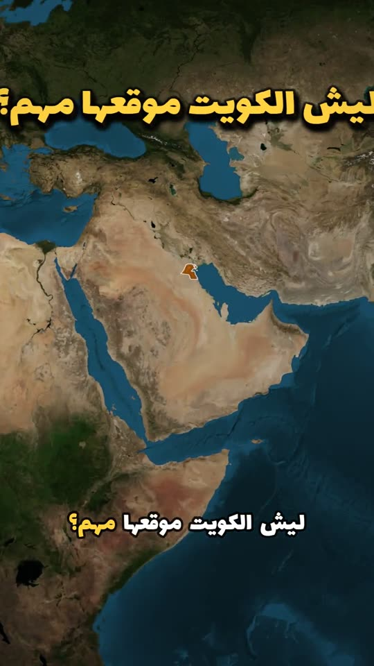
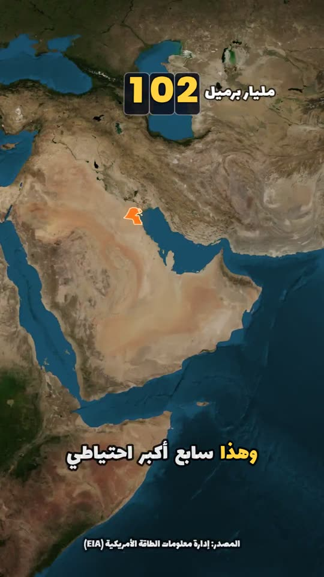
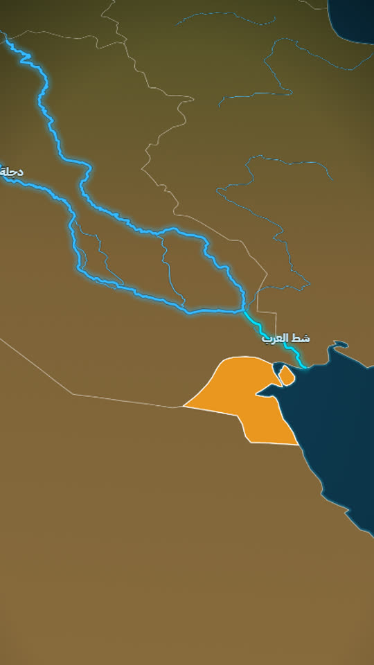

شنو يسويWhat it makes
لقطات حقيقية من فيديو صنعه iconMap نفسه (معاينة الكويت: ليش موقعها مهم؟).Real frames from a video made by iconMap itself (a Kuwait explainer).

كاميرا تنزل من الفضاءA camera that dives from space
كرة ثلاثية الأبعاد بصور ناسا، تنزل للمكان بدون قطع، وكل دولة تُذكر تتلوّن بنفس اللحظة.A 3D globe on NASA imagery that falls to the place with no cut; every country named lights up on its word.

أرقام تتحركNumbers that move
تركض، تنزل وتنط، تنقلب، أو تدور مثل عدّاد السيارة، بجسم ثلاثي الأبعاد.They run, drop, flip or roll like an odometer, with a 3D body.

أعمدة 3D على الخريطة3D columns on the map
أعمدة تنمو فوق الخريطة والرقم يعدّ فوقها، وكاميرا تميل بزاوية.Columns grow on the map with the value counting up, under a tilted camera.

أنهار ترسم نفسهاRivers that draw themselves
اذكر نهر وهو يمشي على الخريطة بلونه واسمه العربي، من بيانات رسمية مفتوحة.Name a river and it runs across the map in colour with its Arabic name, from open official data.